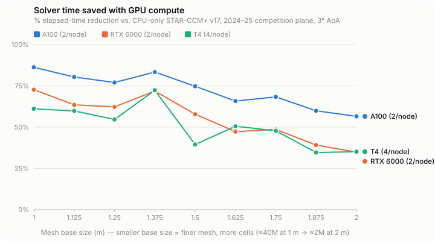

GPU-Accelerated CFD Simulations
A runtime and resource study of STAR-CCM+'s GPU solver on Texas A&M HPRC's Grace supercomputer, used to decide whether the whole team should migrate to a newer software version.
Key takeaways
- Benchmarked STAR-CCM+ v19.06 GPU compute against v17.02 CPU-only runs on nine meshes (2M–40M cells) of the 2024–25 competition plane at 3° AoA, after confirming results matched within 2% across versions.
- A100 nodes cut true solver time by 57–86% and service-unit (SU) cost by up to 68%; RTX 6000 and T4 nodes also saved time on every mesh. Savings grow with cell count, and the team's typical meshes sit at the high-savings end.
- Outcome: the team moved to v19.06.008, and the GPU headroom made k-ω SST implicit-unsteady runs practical for studying flow separation and stall.
Overview
STAR-CCM+ has been slowly introducing GPU support for all its models from 2022 onwards, which is intended to significantly speed up simulation runtime and significantly reduce resource and power consumption per simulation. The team has run into significant issues in the past with running out of resources, since the version used was a few years old and before Siemens began adding GPU compatibility. To determine if it was worth swapping to a newer version and get the rest of the team up-to-speed with the new setup (as the UI had some significant differences to the incumbent version), I conducted a study on resource usage, simulation time, and resource availability using the current version and the new version of STAR-CCM+.
Setup
Using a base simulation of the 2024–2025 season's competition plane at 3 degrees AoA, meshes were generated at base sizes between 1 m and 2 m at equal increments, resulting in meshes ranging between 2 million and 40 million cells. Texas A&M HPRC's Grace supercomputer has nodes containing CPUs only, 2 A100s per node, 3 A40s per node, 2 RTX 6000s per node, and 4 T4s per node, so simulations were set up utilizing all these nodes for study.
To confirm that no issues arise with setup across the new versions, one example simulation run was completed, ensuring all force, moment, and plane information reports were appropriately set up, and that variances of values between versions were under 2% across all relevant metrics.
Results

| Mesh base size (m) | Elapsed time | Total time | SUs | SUs / million cells |
|---|---|---|---|---|
| 1 | 86.23% | 86.27% | 67.97% | 68.91% |
| 1.125 | 80.37% | 80.08% | 54.32% | 55.46% |
| 1.25 | 77.03% | 76.92% | 46.39% | 47.38% |
| 1.375 | 83.37% | 83.46% | 61.20% | 61.70% |
| 1.5 | 74.73% | 74.50% | 41.03% | 41.55% |
| 1.625 | 65.82% | 65.83% | 20.24% | 21.01% |
| 1.75 | 68.33% | 68.00% | 26.12% | 27.31% |
| 1.875 | 59.89% | 59.76% | 6.39% | 10.33% |
| 2 | 56.54% | 57.47% | −1.43% | 2.62% |
| Mesh base size (m) | Elapsed time | Total time | SUs | SUs / million cells |
|---|---|---|---|---|
| 1 | 72.69% | 68.08% | 54.64% | 55.97% |
| 1.125 | 63.50% | 53.02% | 39.33% | 40.84% |
| 1.25 | 62.26% | 52.04% | 35.88% | 37.06% |
| 1.375 | 71.87% | 71.72% | 53.11% | 53.72% |
| 1.5 | 57.82% | 57.80% | 29.71% | 30.33% |
| 1.625 | 47.28% | 47.69% | 12.12% | 12.97% |
| 1.75 | 48.60% | 49.42% | 14.35% | 15.73% |
| 1.875 | 39.13% | 40.24% | −1.48% | 2.80% |
| 2 | 34.87% | 34.51% | −8.53% | −4.22% |
| Mesh base size (m) | Elapsed time | Total time | SUs | SUs / million cells |
|---|---|---|---|---|
| 1 | 61.10% | 60.93% | 41.84% | 43.55% |
| 1.125 | 59.80% | 46.02% | 39.87% | 41.37% |
| 1.25 | 54.64% | 12.04% | 31.96% | 33.21% |
| 1.375 | 72.32% | 54.19% | 58.47% | 59.01% |
| 1.5 | 39.48% | −22.81% | 9.23% | 10.02% |
| 1.625 | 50.51% | 8.84% | 25.77% | 26.49% |
| 1.75 | 47.76% | 47.75% | 21.63% | 22.89% |
| 1.875 | 34.64% | 34.55% | 1.97% | 6.09% |
| 2 | 35.12% | 35.84% | 2.68% | 6.56% |
Notes
- Elapsed time represents true solver time; total time represents wall time according to the compute cluster.
- All GPU setups reduced true solver time, while most setups reduced SU (resource) usage.
Challenges & Conclusion
Based on the SU results, it was determined that as mesh cell count increases in the simulation, the more time and resources are saved by swapping over to GPU compute, assuming all other conditions are the same. Most of our simulations have similar mesh counts to the ones run at the 1 m base size in the table above, meaning that guiding everyone to swap over to v19.06.008 of STAR-CCM+ from v17.02.008 was an easy decision to make. With later simulations, it was also determined that k-ω Shear Stress Transport simulations using the Implicit Unsteady solver in STAR-CCM+ would also run significantly faster and with much less resources than CPU compute, and opened up using that solver (along with other more-demanding solvers) to further analyze flow separation and stall regimes with our aircraft and figure out methods to either mitigate early stall or determine the stall wasn't severe enough at those angles of attack to worry about them.